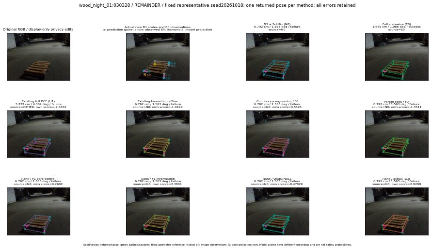

실선은 반환 자세, 초록 점선은 고정 기하 참조입니다. S는 영상 관측이 아닙니다. 점수는 모델별 의미가 다르며 보정된 안전 확률이 아닙니다. 개인정보 처리는 표시 사본에만 적용했습니다.
| 방법·seed | 위치 / 회전 / 공동성공 | 실제 출처 | 선택 후보 | 각 모델 자체 점수 |
|---|---|---|---|---|
| N0 | 6.792 cm / 1.563 deg / failure | N0 | N/A | N/A |
| E0 | 1.645 cm / 1.986 deg / success | E0 | N/A | N/A |
| E0_REGENERATED | 1.645 cm / 1.986 deg / success | E0 | E0_REGENERATED | N/A |
| POSEFIX_SUBPIX_PF_ANCHOR | 3.111 cm / 0.7251 deg / success | OTHER | N/A | N/A |
| POSEFIX_SUBPIX_YOLO_ANCHOR | 3.111 cm / 0.7251 deg / success | OTHER | N/A | N/A |
| D1_H1_MLP_s20261018 | 5.272 cm / 4.302 deg / failure | OTHER | WD0/ORIGINAL_WD/selected | -2.6652286052703857 |
| D1_H1_MLP_s20261019 | 5.272 cm / 4.302 deg / failure | OTHER | WD0/ORIGINAL_WD/selected | -2.984713315963745 |
| D1_H1_MLP_s20261020 | 6.792 cm / 1.563 deg / failure | N0 | N0 | -3.0928287506103516 |
| D1_H1_PAIR_MLP_s20261018 | 6.792 cm / 1.563 deg / failure | N0 | N0 | -1.8729249238967896 |
| D1_H1_PAIR_MLP_s20261019 | 6.792 cm / 1.563 deg / failure | N0 | N0 | -1.8851577043533325 |
| D1_H1_PAIR_MLP_s20261020 | 6.792 cm / 1.563 deg / failure | N0 | N0 | -2.0473430156707764 |
| D1_H1_PAIR_ROLE_AFFINE_s20261018 | 6.792 cm / 1.563 deg / failure | N0 | N0 | -1.0998610258102417 |
| D1_H1_PAIR_ROLE_AFFINE_s20261019 | 6.792 cm / 1.563 deg / failure | N0 | N0 | -1.1060075759887695 |
| D1_H1_PAIR_ROLE_AFFINE_s20261020 | 6.792 cm / 1.563 deg / failure | N0 | N0 | -0.8358553051948547 |
| R_CONT_F0_s20261018 | 6.792 cm / 1.563 deg / failure | N0 | N0 | 0.8594970703125 |
| R_CONT_F0_s20261019 | 6.792 cm / 1.563 deg / failure | N0 | N0 | 1.067160964012146 |
| R_CONT_F0_s20261020 | 6.792 cm / 1.563 deg / failure | N0 | N0 | 1.0394561290740967 |
| R_ORDER_F0_s20261018 | 6.792 cm / 1.563 deg / failure | N0 | N0 | -1.3511431217193604 |
| R_ORDER_F0_s20261019 | 6.792 cm / 1.563 deg / failure | N0 | N0 | 2.8477234840393066 |
| R_ORDER_F0_s20261020 | 6.792 cm / 1.563 deg / failure | N0 | N0 | -3.0062644481658936 |
| R_ORDER_F1_ZERO_s20261018 | 6.792 cm / 1.563 deg / failure | N0 | N0 | 9.260226249694824 |
| R_ORDER_F1_ZERO_s20261019 | 6.792 cm / 1.563 deg / failure | N0 | N0 | 3.9501044750213623 |
| R_ORDER_F1_ZERO_s20261020 | 6.792 cm / 1.563 deg / failure | N0 | N0 | 7.195281982421875 |
| R_ORDER_F1_s20261018 | 6.792 cm / 1.563 deg / failure | N0 | N0 | 2.3801424503326416 |
| R_ORDER_F1_s20261019 | 1.645 cm / 1.977 deg / success | OTHER | G13/ORIGINAL_WD/sample/1 | 3.7249653339385986 |
| R_ORDER_F1_s20261020 | 6.792 cm / 1.563 deg / failure | N0 | N0 | -0.6147315502166748 |
| V_ORDER_NULL_s20261018 | 6.792 cm / 1.563 deg / failure | N0 | N0 | -0.47028857469558716 |
| V_ORDER_NULL_s20261019 | 1.645 cm / 1.977 deg / success | OTHER | G13/ORIGINAL_WD/sample/1 | -0.8573570251464844 |
| V_ORDER_NULL_s20261020 | 6.792 cm / 1.563 deg / failure | N0 | N0 | 4.4679741859436035 |
| V_ORDER_RGB_s20261018 | 6.792 cm / 1.563 deg / failure | N0 | N0 | 2.929938793182373 |
| V_ORDER_RGB_s20261019 | 3.272 cm / 2.175 deg / success | OTHER | G10/ORIGINAL_WD/selected | -1.200258731842041 |
| V_ORDER_RGB_s20261020 | 6.792 cm / 1.563 deg / failure | N0 | N0 | -9.407712936401367 |